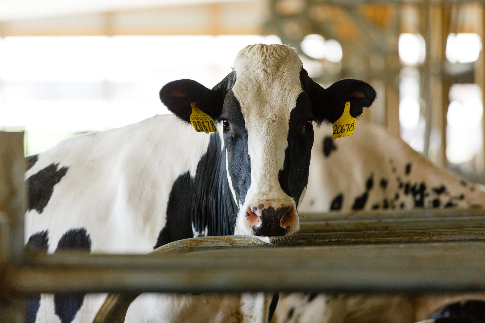

Holstein cows are the backbone of our dairy farm, known for their distinctive black-and-white markings and exceptional milk production. They are the most common dairy breed in the United States, and for good reason—Holsteins produce more milk than any other dairy breed!
At our farm, Holsteins aren't just milk producers—they're an essential part of our team. They enjoy grazing in our pastures, lounging in the barn, and receiving plenty of care and attention. We ensure they have a healthy diet and regular veterinary check-ups to keep them in top shape.